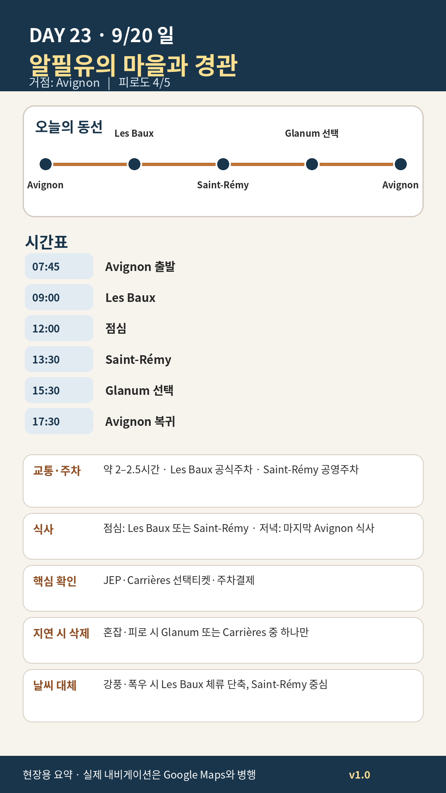

Day 23 · 9/20 일 · Avignon Phase 4 최종

카드의 지도영역은 일정 순서를 보여주는 개요이며 내비게이션이 아닙니다. 실제 도보·운전 경로는 Google Maps에서 다시 계산하세요.
시간표
이 날은 원고에 시각표가 없다. 구간 일정은 일정 한눈에 에 있다.
이 날의 메모
Alpilles — Les Baux, Saint-Rémy와 Glanum 선택
Les Baux를 추천하는 이유
뤼베롱의 석조마을과 겹치는 면이 있지만, Les Baux는 절벽 위 요새도시와 알필유 석회암 지형이 결합되어 공간적 성격이 다르다. 마을 내부 상점보다 외부 전망과 바위에 붙은 도시 형태가 핵심이다.
Les Baux에서 꼭 해볼 것
- 마을 입구에서 건물과 절벽이 하나처럼 이어지는 재료감을 관찰하기
- 전망대에서 Crau 평야와 Alpilles의 방향을 비교하기
- 기념품점 전부를 보지 말고 골목·문·창·석벽의 질감에 집중하기
- Jason은 전망지에서 15–25분 펜스케치 선택
Saint-Rémy에서 꼭 해볼 것
- 시장 없는 일요일에는 관광 “체크리스트”보다 카페·골목·광장의 생활리듬을 느끼기
- Van Gogh 흔적은 표지판·풍경을 가볍게 보고, 정신병원·미술서사를 과도하게 넣지 않기
- 현지 올리브오일·과자·빵을 마지막 프로방스 구매품으로 선택하기
Glanum 판단
- 가야 하는 경우: 로마도시·고대 수로·도시입지에 관심, 날씨가 선선함, JEP 특별프로그램 확인.
- 생략할 경우: 전날 Pont du Gard에서 로마유적 만족도가 충분함, 더위·피로, Saint-Rémy 생활시간을 늘리고 싶음.
- JEP 주의: 9/19–20은 유럽문화유산의 날이다. 무료·특별개방 가능성과 동시에 주차·입장 혼잡이 커질 수 있으므로 최종 프로그램과 예약조건을 확인한다.
오늘 확인할 것
- 핵심 실행
- Les Baux·Saint-Rémy
- 권장 출발
- 07:45 출발
- 완충
- Les Baux 주차 30분
- 최고 리스크
- 주말혼잡·강풍
- 우선 삭제
- Glanum/Carrières 중 하나
- 대체안
- Saint-Rémy 중심
- 식사·휴식
- 두 도시 중간 점심
- 잠금 필요
- 주차·선택티켓
이 날의 장소
일자별 시간표와 본문 표기에서 찾은 것이다. 하루의 전부가 아니라 장소 카드가 있는 것만 담는다.